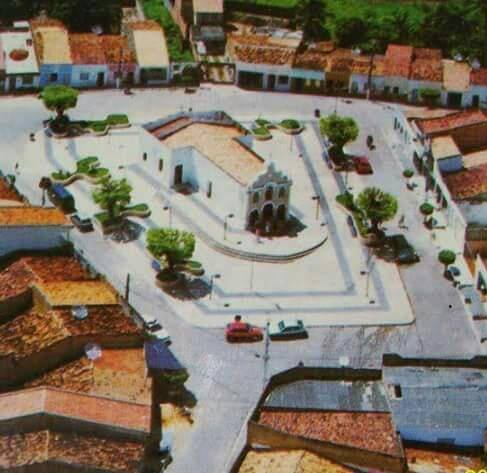

Amparo do São Francisco
História
Na localidade de Urubu do Baixo, hoje cidade de Propriá havia uma grande fazenda chamada Campinhos pertencente ao Capitão Antônio Rodrigues da Costa Dória, membro da primeira Comarca de Propriá.
Em 1855, João da Cruz Freire, filho de donos de engenho, recebe sua herança com a morte do pai e compra parte das terras da fazenda Campinhos, as batizando posteriormente de fazenda Amparo. Dedica-se à criação de gado e lavouras nas novas terras, anos depois casa-se com dona Francisca Senhorinha, descendente de uma família portuguesa e recebe a patente de Capitão da Guarda Nacional. Posteriormente, doa área de terras para a construção de uma igreja dedicada a Nossa Senhora do Amparo. Com o passar do tempo, foram chegando algumas famílias, que decidiram construir suas casas às margens do riacho Jaguaribe, entre a lagoa Salgada e o local onde hoje funciona a Fazenda Jaguaribe.
A localidade cresceu e tornou-se um povoado vinculado à cidade de Propriá. Entre 1937 e 1947 sua jurisdição foi transferida à cidade de Canhoba, retornando a Propriá por influência política do deputado Martinho Guimarães, natural daquela cidade.
Em 1953, Amparo passa a atender os requisitos mínimos da Lei Orgânica dos municípios da época, para sua elevação à categoria de município. O político militante Epaminondas Freire (neto de João da Cruz Freire) e o deputado Martins Dias Guimarães encabeçam a luta em prol da emancipação política do povoado. As primeiras eleições municipais ocorreram em 6 de outubro de 1954, sendo Leonel Vieira da Silva seu primeiro prefeito.
fonte: https://cidades.ibge.gov.br/brasil/se/amparo-do-sao-francisco/historicoDados Gerais de acordo com o IBGE
| Prefeito (a) | Franklin Ramires Freire Cardoso |
| Vice-Prefeito (a) | Adjalmir Jose Silveira |
| Site do município | https://amparodosaofrancisco.se.gov.br/historia#:~:text=Em%2025%20de%20novembro%20de,se%20Amparo%20de%20S%C3%A3o%20Francisco. |
| Área territorial | 35,683 km² |
| População estimada | 2.386 pessoas |
| Densidade demográfica | 64,75 hab/km² |
| IDHM | 0,611 |
| PIB per capita | R$ 14.014,72 |